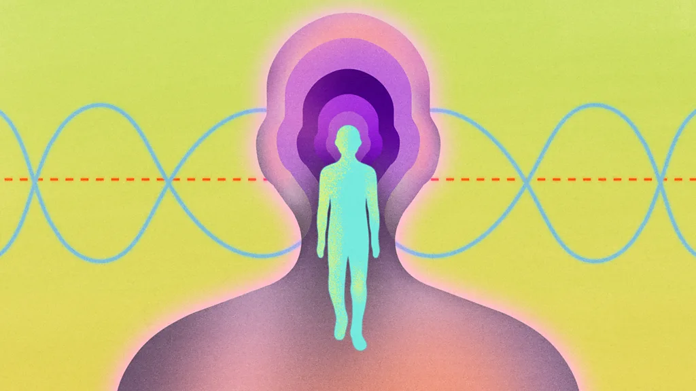

Introducing Health Fix, our newsletter to boost your health and wellbeing

Subscribe to our weekly email with insights rooted in science to bust myths, for international audiences.
Most of us know that to live a long and healthy life, we should eat well, exercise and look after our
mental health. But working out which steps will bring the most improvement to our health and wellbeing
can be tricky.
It gets especially hard when we are faced with so much conflicting advice. Distinguishing a clever marketing
ploy from a science-backed technique that might actually be good for you is no easy task.
But Health Fix, the BBC's new dedicated health newsletter, is here to help.
This weekly email will draw on the BBC's globally renowned health coverage to bring you
a mixture of health news, myth-busting insights and tips rooted in the scientific research that you
can actually trust.
The newsletter is fronted by me, Melissa Hogenboom,
a health correspondent and author who's been reporting and editing in this field for a decade.
I'm passionate about helping readers separate fact from fiction when it comes to their health and make
informed decisions based on the latest expert thinking.
If there is a specific topic that you would like to see us focus on, you can suggest ideas or
submit your health-related questions here. We always
love hearing from readers, and our team reads every email.
If you want to receive trusted insights to boost your health and wellbeing in your inbox every
Wednesday, sign up to Health Fix for free here.
Health Fix is just one of a growing slate of newsletters from the BBC on topics ranging from history to the
Royal Family to technology. Explore all those
available to you here.
Melissa Hogenboom (@Melissa_Hogenboom)
Science writer
*Please note that all content within the newsletter will be provided for general information only and should not be treated as a substitute for the medical advice of health care professionals.
You can also sign up for The Essential List newsletter - a handpicked selection of features, videos and can't-miss news, delivered
to your inbox twice a week.
For more science, technology, environment and health stories from the BBC, follow us on Facebook, X and
Instagram.i>